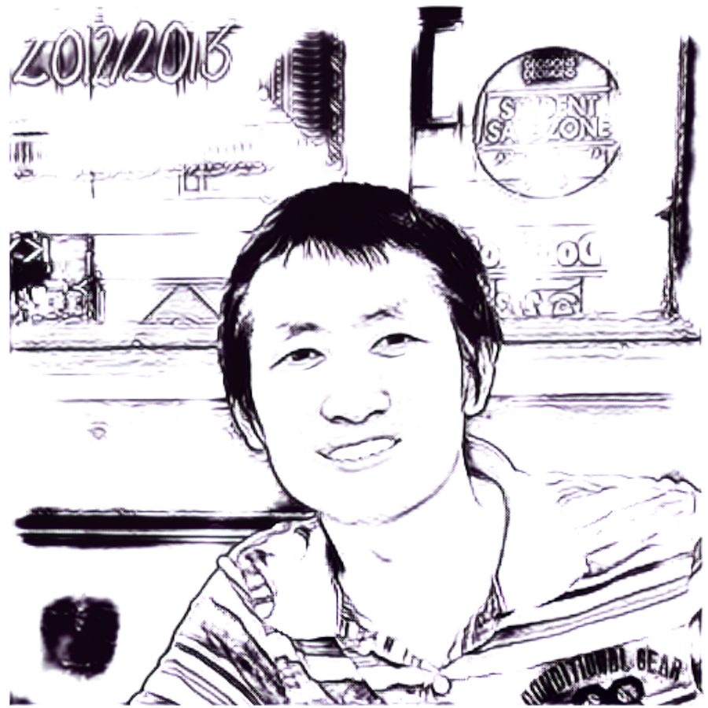
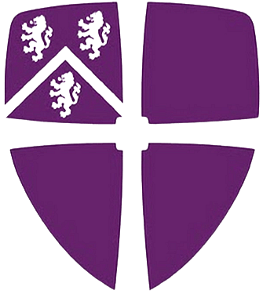

University
University  GitHub
GitHub|
 |
Jingjing Deng 邓晶晶
Assistant Professor (PhD, FHEA) Rand2AI Lab, VIViD Group, Computer Science Castle SCR, Durham University, UK
|
|
I am an Assistant Professor in the Department of Computer Science at Durham University. My research interests are computational and mathematical intelligence, non-linear analysis and computing, and applications in biomedical and physical sciences. I am actively seeking collaborative opportunities motivated by industrial practices and theoretical principles across disciplines. |
University G-Scholar
 DBLP
DBLP ORCID
 arXiv GitHub
arXiv GitHub
|
I am looking for research students who are interested in the following topics. Unfortunately, these projects so far are not funded by any sponsor. Nevertheless, a number of open scholarships are available for potential candidates. I am more than happy to support qualified candidates' applications, however, these scholarships are highly competitive.
|
|
|
Selected Publications
For the most recent works, the pre-print can be found on arXiv, the code are hosted on GitHub.
 📑 Xie X., Hu C., Ren H. and Deng J. A Survey on Vulnerability of Federated Learning: A Learning Algorithm Perspective, arXiv:2311.16065, 2023. [ Pre-Print | Github-Page ]
📑 Xie X., Hu C., Ren H. and Deng J. A Survey on Vulnerability of Federated Learning: A Learning Algorithm Perspective, arXiv:2311.16065, 2023. [ Pre-Print | Github-Page ]
📑 Ren H., Deng J., Xie X., Ma X. and Ma J., Gradient Leakage Defense with Key-Lock Module for Federated Learning, arXiv:2305.04095, 2023. [ Pre-Print | Code-PyTorch ]
📑 Ren H., Deng J. and Xie X., GRNN: Generative Regression Neural Network - A Data Leakage Attack for Federated Learning, ACM Transactions on Intelligent Systems and Technology (TIST), 2022. [ ACM | Pre-Print | Code-PyTorch | Patent (WO2022223629A1, Pending) ]
📑 Deng J. and Xie X., 3D Interactive Segmentation with Semi-Implicit Representation and Active Learning, IEEE Transactions on Image Processing (TIP), 2021. [ IEEE | Code-Xcode ]
Research Members & Visiting Scholars
So far, I have successfully supervised 1 Ph.D and 1 M.Res students up to their completion. I am very fortunate to work with the following colleagues and students.
2023, Research Student, Ms. Mridula Vijendran (Co- with Dr Hubert Shum, Durham University).
2023, Research Student, Mr. Tianyu Zhang (Co- with Dr. Yang Long, Durham University).
2022, Research Student, Mr. Chen Hu (Ext.-Co- with Prof. Xianghua Xie, Swansea University), partially funded by Faculty of Science and Engineering.
2021, Research Student, Mr. Yiming Li (Ext.-Co- with Prof. Xianghua Xie, Swansea University).
2020, Research Student, Ms. Yi Hu (Ext.-Co- with Prof. Xianghua Xie, Swansea University).
2019, Research Student, Mr. Hanchi Ren 🎓 (Co- with Prof. Xianghua Xie, Swansea University), partially funded by Engineering and Physical Sciences Research Council (EPSRC), passed Ph.D viva in Mar 2023 (➔ Academic Tutor at Swansea University).
2019, Visiting Scholars, Dr. Di Lu, XiDian University, funded by National Natural Science Foundation of China (NSFC).
2018, Research Student, Ms. Katarzyna Szymaniak🎓 (Primary, Swansea University), passed M.Res viva in Oct 2019 (➔ Ph.D Student at University of Edinburgh).
2018, Visiting Scholars, Dr. Liumei Zhang (Co- with Prof. Xianghua Xie), Xi'an Shiyou University, funded by China Scholarship Council (CSC).
For prospective students who are interested in reading a Ph.D with me on medical image analysis and artificial intelligence, please email me with your CV and research statement. I am expecting you have a solid background in computer science or applied mathematics or related subjects, (i.e. pure mathematics, physics, EEE), professional programming skills, a deep sense of curiosity, and persistence. A recommendation letter directly from your current supervisor is essential. If there is no explicit evidence to demonstrate your research skills (i.e. publications on recognisable venues, open-source project experience), another recommendation letter from an academic referee is required. You need to meet the entry requirements of University.
There are a number of EPSRC/university/faculty/departmentally funded Ph.D studentships at Durham every year which (most-likely-only) cover a tuition fee at the UK-Home level and a living stipend. The deadline for applying is typically in early Jan with a decision being made in Feb/Mar and a non-negotiable start date of 1st Oct. You need to secure an (unconditional) offer before submitting your studentship application. The studentship is very competitive, and the applicants are assessed by an award committee mainly based on applicants' performance, potential, track record and academic background. If you are interested, please get in touch with me by the 15th Nov for the coming round.
国家公派出国留学项目: For Chinese students, I am more than happy to support your CSC applications. More information can be found here or there. The scholarship will cover the full cost of tuition fees, annual allowance etc. to successful Chinese national candidates.
Grants and Projects
My works have been funded by the following research councils and industry partners in various ways. I am grateful for the supports.
2022, Intel® FPGA Academic Program, 2x PAC D5005 (Swansea)
2021, The Higher Education Funding Council for Wales (HEFCW) Capital Funds, £35K (Swansea, Internal Sub-Project, Co-I)
2018, NVIDIA® Academic Hardware Grant Program, 1x Quadro P6000 (Swansea)
 Our team support open-source and open-science initiatives in a greatest possible manner under the permission of ethics, privacy, confidentiality and commercial agreements. We are expecting the potential collaborators are also in favor of the openness .
Our team support open-source and open-science initiatives in a greatest possible manner under the permission of ethics, privacy, confidentiality and commercial agreements. We are expecting the potential collaborators are also in favor of the openness .
Professional Activities and Awards
Publication Chair of International Conference on AI in Healthcare (ALiH) 2024.
Technical Program Co-Chair of International Conference on AI-generated Content (AIGC) 2023.
Website Chair of British Machine Vision Conference (BMVC) 2015.
Local-Organiser of BMVA Computer Vision Summer School (CVSS): 2014, 2015, 2016.
Local-Organiser of Medical Image Understanding and Analysis (MIUA) 2012.
Grant Reviewer: UKRI, NIHR, Rosetrees Trust etc.
Journal Reviewer: TPAMI, IJCV, TIP, TNNLS, TKDE, TMM, TETCI, PR, TIST, TVT, NN, JBHI, COGN, IET-CV, etc.
Conference Reviewer: BMVC 2017-23, CVPR 2019-24, ICCV/ECCV 2019-24, etc.
Teaching and Mentoring
I am teaching or taught the following modules:
COMP52715: Deep Learning for Computer Vision and Robotics (Module Lead), Durham University, 2023-
COMP2271: Data Science - Computer Graphics (Sub-Module Lecturer), Durham University, 2023-
COMP42415: Text Mining and Language Analytics (Support Practical), Durham University, 2022-23
CSCM35: Big Data and Data Mining (Module Lead), Swansea University, 2018-2022
CSCM38: Artificial Intelligence and Cyber Security (Module Lead), Swansea University, 2018-2022
CS-150: Concepts of Computer Science (Sub-Module Lecturer), Swansea University, 2018-2020
I am a Fellow of the Higher Education Academy (FHEA). I was the assessment officer of CS department at Swansea University in 2018-2022, where I led the assessment team during the COVID and faculty restructure periods in 2019-2022.
Office Hour: Wednesday 4pm-5pm (During Term Time).
Email Response: I will try my best to get back to you ASAP, but it does not guarantee it can meet your expectation. A gentle reminder is always welcome. (A) For module related queries, I will answer them in a batch manner on Monday & Wednesday & Friday. (B) For any other urgent queries, I will answer them on a daily basis given that I have time to do so.
Academic Reference: For University UG/PGT students, please note that I am NOT able to provide you academic references UNLESS (A) you are working directly with me (primary supervisor) on your dissertation projects for at least 3-months in the last 18-months, OR (B) you currently are my academic advisee. You should ALWAYS ask permission to pass my contact to your employer or University admission office for every reference. Any unauthorised reference request will be ignored. Please be mindful of how many references you are requesting.
Rand2AI Lab
We are a group of researchers from Durham and Swansea Universities with common interests in general machine learning and artificial intelligence ranging from theory through methodology to biomedical and physical sciences applications.
Updated: Nov 2023